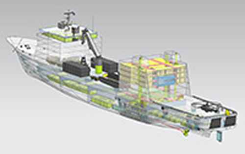

Konstruktion | lautraum
2020.11.28 09:35
lautraum
Laute Träume und Präriewunder. Festivalblog zu Wunder der Prärie 2013.
Menü
Zum Inhalt springen Startseite All those Beautiful Boyz friedafritz meet Beautiful Boyz, questionnaire I Brunswick Centre 1970s The Uniform of the World Clarenville Über Clarenville cold war / hot dogs panzer meiner aufmerksamkeit, 19.09 Swingtanztee unterm Kanonenrohr Problempanzer Collini Social Club Konversion, 19.9 alla goodbye kulturelle kriegsführung und die musik der freiheit, 20.09 Hausbesetzer und Hausbesitzer, 21.09. Social Panzer Fotos Collini Social Club Vorrede zur Veranstaltung am Ende des Festivals Vorträge der letzten Tage (25.&26.9.): von Autonomen Autos und Daten Das Stueck Das Stueck-1 deeply really truly übertragungsvergebung, and there you have it! Eine Entschuldigung Der neue Mensch Mensch und Blog nicht viel neues. every song i´ve ever written every interview i ever made Fassaden der systematischen Verelendung Bilder an Jungbusch-wänden. First Life Ein Melodram „Dance Me To The End Of Love“ Eine Beziehung zu Ende tanzen Lost Life Freie Radikale frei[1] frei frei, wie brot Fotos Hourglass Mittwoch Donnerstag Freitag Samstag Sonntag Mannheim 2013-2027: Wer macht wen zukunftsfit? Langsam naht die Anastrophe Fahrradtour mit AG AST Stadtspaziergang mit AG AST Auf einen 108er mit AG-Ast. Fahrradtour ohne AG AST Fahrradtour mit Rosa Metablogging Der Schreibprozess hat begonnen. Laut Festival Blog Traum Overview Monkeymind Irrungen, Wirrungen. my name is tomas gonzalez and we have 60 minutes tomas has a charming smile or: 60 and more minutes of wondering of being entertained Paces 1. Intervention Pass it on Object versus Experience on inside deals Soziale Bausätze Digitale Dokumentation Polaroids Rocky Dutschke Der Tribun Erfahrungen mit Nr. 04 und 05 The Mannheim Games Tour Spiel, Spaß, Heiterkeit. Was es bedeutet, ein Ostkreuz Fotograf zu sein Die Berliner kommen Weird III Bastard Fools – auf der Suche nach der SchärfeSchlagwort-Archive: Konstruktion
Kollektive Konzentration ist durchaus endlich.
26/09/2013 · von lautraum | tagged Bausatz , Das soziale Band , Gemeinschaft , Konstruktion , Lego , Peter Sloterdijk , Ricarda Franzen , Robert Schoen , Soziale Bausätze | Hinterlasse einen KommentarDie große gemeinsame Konstruktion lässt sich natürlich nicht in Textform wiedergeben.Darüberhinaus bezweifeln wir, dass unsere Fotos, ja irgendeine Form von Abbildungen den Ausmaßen und der Großartigkeit dieses Mammut-Projekts auch nur annähernd gerecht werden kann. Was hier also angeführt werden kann ist ein bescheidener Versuch. Das soziale Band ist ein Hörspiel über das Hörspiel, eine Sendung […]
Beitragsnavigation
about lautraum
lautraum
Das Blog zum Festival Wunder der Prärie 2013
Dieses Festival-Blog fragt sich nach dem Aufstehen immer, was es eigentlich für Potential hat, mit dem es etwas anfangen kann. Es fragt sich, was eigentlich „laute Träume“ sind, ob es auch welche haben kann (oder letzte Nacht sogar schon einen hatte?), und ob Blog-Schreibende eigentlich immer allein im stillen Kämmerlein – dafür aber möglichst schnell und direkt – Beiträge posten sollten. Es fragt nach seinen Leserinnen und Lesern, fragt diese auch direkt, und es probiert mit verschiedenen Formen von Texten, Bildern, Tönen herum.
Ein Festivalblog stellt sich programmatische Fragen zu lauten Träumen, Festivals und zum Bloggen als kollektives Schreiben. Aus diesen Perspektiven heraus berichtet es über die Wunder der Prärie.
lautraum ist ein Projekt der Angewandten Theaterwissenschaft Gießen unter der Leitung von Eva Holling, mit Katharina Berger, Max Brands, Chico Freisleben, Elisabeth Lindig, Anke Mager, Leander Ripchinsky, Arne Schirmel, Hanna Steinmair, Lennart Wilm, Hanke Wilsmann.
Countdown
Wunder der Prärie 18/09/2013 The Festival starts!!!Wortfetzen der Prärie
good bye and thank you weird Play death party panzer the Internet? geburtstagsparty a song? one-night stand befehlsverweigerung schönheit amerikanischer Frisör dadatei oder doch: open Dada da fängt's schon an! alptraum daten sprechen nicht für sich geschmacksfrage bubble Chart professionell Frauenmissachtung gARTen quiche gewollt? ordnungsamt süß kommunikation banal neue Kunsthalle apfelkomott Kobold Budapest wiedersehen roulette das böse g-wort: gentrifizierung kohlenhydrate bloggrotte spatzenweg rettich you know wohin? Ostkreuz schlossgarten theaterarzt erinnerungsraum hibbelig kombüse platonisches Radio kantine 108er wahlen japanischer whiseky going once, going twice, going three times, sold! couch ungefähre bedeutung heiligen schrift in deutsch but you still desire us lambada we are attractive parfümeure GI bitte pünktlich vom häuserbesetzen stehblues unbequem hillbilly heteronormativität nachschlag Panzerhelfer yeah kalter krieg-warme spuren DISCO stulle adolescent suicideAktuelle Beiträge
Nachtrag zum letzen Panzerumzug Wunder Ende Zu Gast bei Edith. Tägliche Perfomance Volle Orgonenenergie, eine Expedition ins UnbekannteTags
ATW Café Kaprow Chun Hua Catherine Dong Clarenville Cold War / Hot Dogs Dragana Bulut Every Song I ve ever written Festivaleröffnung Festivalphilosophie Festivalvorbereitung Hanke Wilsmann Jacob Wren Jost von Harlessem Kino RAUMLABORBERLIN Ricarda Franzen Robert Schoen Soziale Bausätze Traum WetterNeueste Kommentare
Ricarda bei die große gemeinsame Kons… Luigi bei on „All Those Beautiful… Die alte Zukunft bei der große Schwindel inthere bei on „All Those Beautiful… chico bei Hier schonmal ein sozialer…Blogroll
ATW Wunder der PrärieBlog Stats
12.495 hitsATW
Institut für Angewandte TheaterwissenschaftJustus-Liebig-Universität-Gießen lauttraum@gmail.com
Meta
Registrieren Anmelden Feed der Einträge Kommentare-Feed WordPress.com Erstelle kostenlos eine Website oder ein Blog auf WordPress.com.